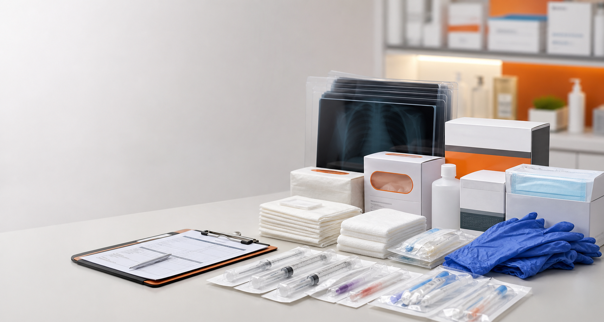

Supply
Pengadaan alat kesehatan disposable dan penunjang medis untuk kebutuhan rutin faskes.
Nusa Kharisma Raya membantu rumah sakit, klinik, apotek, dan institusi memperoleh kebutuhan medis disposable, perawatan luka, radiologi, dan peralatan rumah sakit secara terstruktur.

Tentang NKR
Nusa Kharisma Raya berbasis di Bandung dengan cabang di Lampung. Fokus utama kami adalah menyediakan produk disposable medis dan perlengkapan kesehatan lain untuk kebutuhan pengadaan B2B.
Katalog disusun berdasarkan kategori dan merek agar tim procurement mudah menemukan produk seperti Cosmomed, Aximed, Bunda, Abbocath, Fuji Medical X-Ray Film, Baby Boom, See-U, Plenty, dan lini furniture rumah sakit.
Profil PerusahaanMerek & kategori
Pengadaan alat kesehatan disposable dan penunjang medis untuk kebutuhan rutin faskes.
Tim NKR membantu pengecekan kebutuhan produk dan proses inquiry pengadaan.
Bantu pilih kategori, merek, dan varian produk yang sesuai kebutuhan institusi.
“Dependable products and prompt service.”
Inquiry pengadaan
Kirim daftar kebutuhan produk, merek, atau kategori. Tim NKR akan membantu proses inquiry melalui email atau telepon.